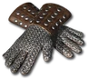

Heyday

Rapturous Blessings
Heavy Bracers
Defense: 37-44
Required Level: 70
+75-125 Defense
+1 to Salvation
+10% Faster Cast Rate
+5% to all Maximum Resistances
+10-15% to All Resistances
+15 to Energy
+15 to Vitality
Unique Gloves
Rapturous Blessings
- Type
- Gloves
- Base
- Heavy Bracers
- Tier
- Exceptional
- Required level
- 70
- Item level
- 60
- Required strength
- 58